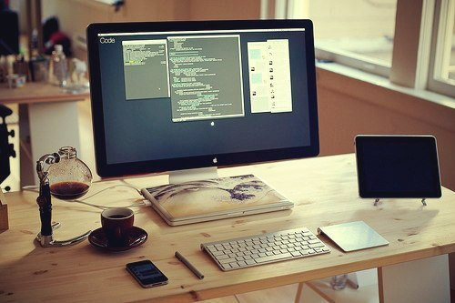

Tənbəlliklə necə mübarizə aparmalı: məhsuldarlığı artırmaq üçün 10 addım
Öz üzərində işləmək istəyənlər üçün sadə və praktik üsullar hazırlanıb. Bu üsullar tez mənimsənilir və dərhal nəticə verir.
İnsan məhsuldarlığını artırmaq üçün üsullar çoxdan hazırlanıb. Ancaq işlə məşğul olan insanlar onlardan istifadə etmirlər. Üstəlik, çox az adam məqsədlərinə daha az səy sərf edərək nail olmağa çalışır. Halbuki məhsuldarlığı artırmaq üçün cəmi bir neçə ay kifayətdir. Tənbəlliyi aradan qaldırmaq üçün daim özünü inkişaf etdirmək lazımdır. Öz üzərində işləmək istəyənlər üçün sadə və praktik üsullar hazırlanıb. Bu üsullar tez mənimsənilir və dərhal nəticə verir.
1.Günün, həftənin və ayın 3 əsas işini planlaşdır
İş həftəsinə başlayarkən özünə sual ver: “Həftəsonuna qədər hansı üç işi görməliyəm?”. Bu, mühüm iş hesabatı, kinoya getmək, idman zalında məşqləri tamamlamaq ola bilər. Belə sualları hər gün vermək lazımdır. Eyni zamanda, onlar həftəlik planlara zidd olmamalıdır.
Cümə günü həftə ərzində görülən bütün işləri və fəaliyyət sahələrindəki vəziyyəti analiz et. Hansı istiqamətlərdə düzəlişlərə ehtiyac olduğunu, hansında isə hər şeyin yaxşı getdiyini müəyyən et. Yeni iş həftəsinə başlamazdan əvvəl çatışmazlıqlarını nəzərə al. Ay üçün də eyni qaydada planlar qurmaq olar. Bu metod prioritetləri düzgün müəyyənləşdirməyə və məqsədə fokuslanmağa kömək edir, üsullara deyil.
2.Planlarını kino kimi canlandır
Məqsədlərin siyahısı sadəcə Word sənədi deyil. Düşünülmüş tədbirləri yalnız yazılı şəkildə deyil, həm də vizual olaraq təsəvvür etmək mümkündür. Alimlərin apardığı tədqiqatlar göstərir ki, insan beyni arzulanan və yaxınlaşan hadisələri ayırd edə bilmir. Bu xüsusiyyət məqsədlərə nail olmaq üçün səmərəli istifadə oluna bilər.
Əgər arzulanan hadisəni (karyerada yüksəliş, böyük alış-veriş, ekzotik ölkəyə səyahət) təsəvvür etsən, şüuraltında onu həyata keçirmək istəyi yaranır. Bu proses işə düşdükdə, beyin gələn siqnalın həyata keçirilməsi üçün imkan axtarır. Planlarını vizual olaraq canlandır – həm kiçik, həm də böyük miqyasda.
3.İşə başlamazdan əvvəlki zərərli “mərasimlərdən” qurtul
Demək olar ki, hər kəsin iş günü səhəri qəhvə, əməkdaşlarla söhbət və internetdə xəbərlərə baxmaqla başlayır. Çox vaxt bu işöncəsi “mərasimlər” uzanır və məhsuldarlığını əlindən alır. Tətil zamanı isə tam əksi baş verir: əllər öz-özünə noutbuka, elektron poçtu yoxlamağa və iş zəngləri etməyə uzanır. Rahatlamaq və işdən uzaqlaşmaq bəzən işə diqqət toplamaq qədər çətin olur. Bu faydasız vərdişlərdən qurtul və vaxtından daha səmərəli istifadə etdiyini hiss et..
4.Meditasiya ilə məşğul ol
Meditasiya müxtəlif ola bilər: mürəkkəb kompleks məşqlərdən tutmuş sadə, çox vaxt aparmayan üsullara qədər. Sənə uyğun metodikanı yükləmək kifayətdir ki, 15 dəqiqə ərzində məhsuldar iş gününə köklənəsən. Bundan başqa, meditasiya sağlamlığı yaxşılaşdırır, əhvalı qaldırır və stressi azaldır.
5.Gündə birdən artıq “acı iş” olmasın
“Acılıqlar” – xoşlamadığın, amma yerinə yetirməli olduğun işlərdir. Məsələn, qarajı yığışdırmaq, ictimai çıxış etmək, rəhbərə hesabat vermək, xoşagəlməz insanla görüşmək. Psixoloji xüsusiyyətə görə insanlar belə işləri “sonraya” saxlamağa meyllidirlər. Nəticədə onlar yığılır və sənin üstünə “yıxılır”. Bunun qarşısını almaq üçün gündə bir xoşagəlməz işdən artıq görməməyə çalış.
Tez-tez belə olur ki, vacib iş və ya iclas zamanı gələn telefon zəngi fikri yayındırır. Yaxud məktub gəlir və sən dərhal cavab vermək istəyirsən, üstəlik elə həmin anda elektron elanları da yeniləmək lazım olur. Belə yayındırıcılardan sonra fikri toplamaq və işə davam etmək çətinləşir. Əlbəttə, özünü bir işdən digərinə tez keçməyə öyrətmək vacibdir. Amma bu, sənin ziyanına olmamalıdır. Özündə düzgün prioritetləri müəyyənləşdirmək və hər mesaj və ya zəngə dərhal reaksiya verməmək vərdişi formalaşdır.
7.Kiçik fasilələr et
Yarım saat işlə, 5 dəqiqə dincəl. Dördüncü fasilədə isə istirahət vaxtını 30 dəqiqəyə qədər uzat. Bu metod iş zamanı diqqəti itirməməyə və yorulmamağa kömək edir. Xüsusən də eyni iş üzərində çalışanlar üçün əlverişlidir. Ancaq vacibdir ki, fasilə internetdə boş vaxt keçirməyə çevrilməsin. Ən yaxşısı yüngül hərəkətlər və ya qısa gəzinti etməkdir.
8.Assosiasiya siyahısı hazırla
10–20 maddədən ibarət əsas siyahılar tərtib et. Hər mövqe müəyyən bir rəqəmlə assosiasiya olunmalıdır. Məsələn: 1 – kitab, 2 – velosiped, 3 – üçlük və s. Bu metod vacib planları və işləri yadda saxlamağa təsirli şəkildə kömək edir.
9.B-ALERT sistemini tətbiq et
Bu sistem hərflərin qarşılığı olan fəaliyyətlərə əsaslanır:
B – Blueprint (plan) – günün planları.
A – Action (fəaliyyət) – qoyulan tapşırıqların yerinə yetirilməsi.
L – Learning (öyrənmə, özünüinkişaf) – yeni məlumatların qəbulu. Bu, faydalı kitab, məqalə, video ola bilər.
E – Exercise (fiziki məşq) – yoqa, idman hərəkətləri, zalda məşq.
R – Relax (istirahət) – işdən fasilə, gəzinti.
T – Thinking (düşünmə) – effektivliyi analiz etmək, məqsədləri vizual planlaşdırmaq.
10.Günü sonunda yekunlaşdır
Günün ərzində görülən bütün işləri təhlil et və hələ görüləsi işləri nəzərdən keçir. Məqsədlərə çatmaq üçün nə qədər vaxt sərf etdiyini müəyyənləşdir. Əgər bəzi işlər ertəsi günə keçirilibsə, buna mane olan amilləri xatırla və aradan qaldır. Həmişə gözlənilməz hallara yer saxla. Mütləq öz nailiyyətlərini qiymətləndir və əldə olunan nəticələrdə dayanma.